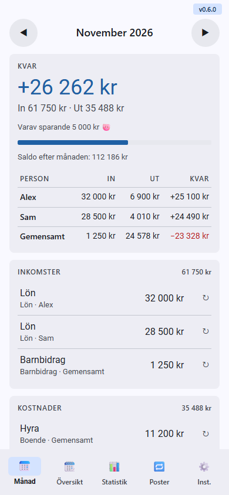
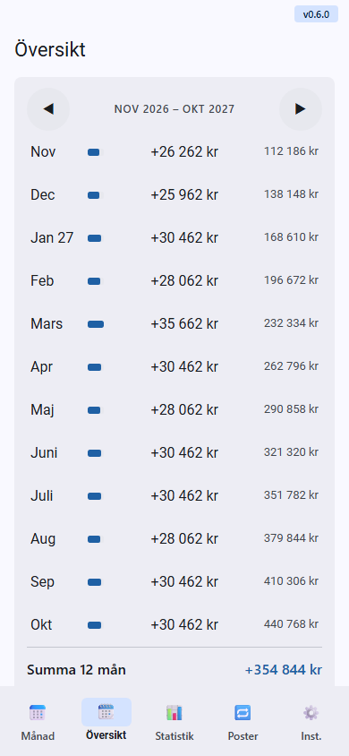
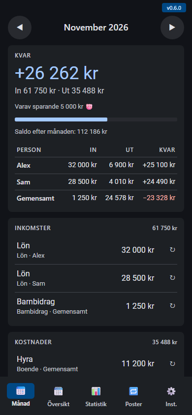

Budget buddy
Planera ekonomin månad för månad – inte varje kvitto. Utan konto, utan reklam, utan ramverk.
Tre principer bakom appen
Ett tydligt fokus
Appen svarar på en enda fråga: går månaden ihop? Allt annat väljs aktivt bort.
Integritet först
Ingen inloggning, ingen spårning. Data stannar på telefonen, och webbläsaren stänger ute allt som inte är appens eget.
Ren webb
HTML, CSS och vanlig JavaScript. Inga byggsteg – hela appen kan levereras som en enda fil.
Budget buddy
#2a6fb0Planera ekonomin månad för månad – inte varje kvitto.
- Lön och räkningar läggs in en gång – varje månad, kvartal eller år
- Bara avvikelserna fylls i, på rätt månad
- Saldot 12 månader framåt
- Valfritt per person eller gemensamt
- Krypterad backup, offline, ljust och mörkt tema



Månad · Översikt · Mörkt tema – påhittad exempeldata
Varför den här appen?
De flesta budgetappar vill att du loggar varje köp. Budget buddy gör tvärtom: du lägger in inkomster och fasta räkningar en gång, och fyller bara i avvikelserna – nya däck, en tandläkarräkning – på den månad de hör till.
Skyddad på riktigt
Vanliga budgetappar sparar datan på företagets servrar bakom ett konto. Här finns den bara i din telefon – och i backup-filer som bara ditt lösenord öppnar.
Mot bankens och betaltjänsternas budgetverktyg
| Budget buddy | Typisk budgetapp | |
|---|---|---|
| Arbetssätt | Plan per månad, bara avvikelser | Varje köp kategoriseras |
| Framåt i tiden | 12 månader saldo | Oftast bakåt: vad du har spenderat |
| Bankkoppling | Ingen – du skriver själv | Bättre – transaktioner automatiskt |
| Integritet | Bättre – inget konto, all data på telefonen | Konto och bankdata i molnet |
| Kostnad | Gratis, ingen reklam | Ofta prenumeration |
Säkerhetstestad
Automatiska tester körs före varje commit och push. Underkänt test = ingen release.
Säkerhetskontroll
- Bara appens egen kod körswebbläsaren blockerar allt annat, även om någon försöker smyga in något.
- Inget lämnar telefonenappen pratar aldrig med någon server – även valutakurserna är inbyggda.
- Din data stannar hos digsparas bara i telefonen; appen rör bara sina egna uppgifter.
- Fungerar utan nätmed bara appens egna filer – inget hämtas utifrån i smyg.
- Låst backupbara ditt lösenord öppnar filen – samma typ av kryptering som banker använder. Lösenordet sparas aldrig.
Funktionstester
- Trasiga filer stoppasen backup från fel app, eller som någon ändrat i, läses inte in.
- Inget innehåll kan bli kodallt visas som vanlig text, även konstiga namn.
- Export och raderingbackup tur och retur ger identisk data; radera tömmer bara appens egna data.
- Rätt summorallt räknas i hela ören – inga avrundningsfel.
Material Design 3, byggd för mobilen
Färg via roller
Nyckelfärgen styr allt. Ljust och mörkt tema följer telefonen. Nästan kantigt och tätt.
Bottenmeny för tummen · tryckytor ≥ 48 px · systemtypsnitt
Samma struktur, varje gång
index.html styles.css app.js store.js version.js sw.js docs/ SPEC · MANUAL · presentation tools/ tester · bygge dist/ testfil med allt inbakat
- SPEC först – idé, mål, icke-mål
- Säkerhet: förhandsprövning före bygget, efterkontroll före push
- Release kör kontroll och alla tester – underkänt stoppar
- Det som blir bättre här förs in i alla appar
Installera på 30 sekunder
- Öppna adressen i Chrome på mobilen:
flyinggooner.github.io/Budget-buddy - Tryck på ⋮ och välj Installera app. På iPhone: Dela → Lägg till på hemskärmen.
- Öppna appen från hemskärmen. Den startar i eget fönster.
Enkelt för användaren.
Genomtänkt bakom kulisserna.
Din plan, din månad och din data – bara i din telefon.